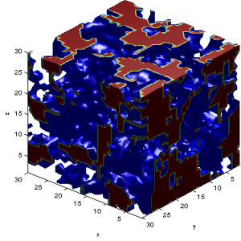

|
NSF Postdoctoral Research
A set of C++ code developed by Andrew E. Slaughter
|
|
NSF Postdoctoral Research
A set of C++ code developed by Andrew E. Slaughter
|
The program, v2m, converts 3-D "binary" image files such as those gathered from a CT-scanner and converts them into a 3-D tetrahedral mesh for the use in finite element programs. The images must be comprised of 0's and 1's, where the value of 1 is the solid that is meshed.
This program relies on the CGAL (www.cgal.org) and VTK (www.vtk.org) libaries. The main meshing capabilities are demonstrated in the CGAL documentation, in particluar Section 50.3.3, "Domains From Segmented 3D Images."
The main executable, v2m, is controlled via command-line inputs, which allow the user to specify the input and output files as well as various meshing criteria parameters. The executable is in the exec directory. To view the available parameters and the associated default values use the help command:
v2m --help
It is also to specify a configuration file with the --config option followed by the configuration filename. The configuration file should follow the format of the Boost Program Optoins library: http://www.boost.org/doc/libs/1_49_0/doc/html/program_options.html .
In the simplest form, only the input file name must be specified, as follows. Currently, *.inr, *.inr.gz, *.tif, and *.tiff input files are supported. Sample files are available in the data/v2m directory. In this case the output file is placed in the same directory in the *.vtu format.
v2m ../data/v2m/randvol_30.inr
The output format can be specified by using the --output-file-format flag (-f). The period in the file type must be included. The following four file types are supported:
v2m ../data/v2m/randvol_30.inr -f .vtk
The complete path and file for the output may also be specified with the --output-file (-o) flag as such or without any flag. The following examples are all valid methods for specifing the input and output files. The flags may be used, but by default the first input without a flag is considered the input file and the second without a flag the output file.
v2m -i ../data/v2m/randvol_30.inr -o ./randvol.vtk v2m ../data/v2m/randvol_30.inr -o ./randvol.vtk v2m ../data/v2m/randvol_30.inr ./randvol.vtk v2m --normalize ../data/v2m/randvol_30.inr --enable-file ./randvol.vtk
The meshing behavior may be modified with the meshing criteria list below. Details of the various critiera may be found in the CGAL documentation, Chapter 50, 3D Mesh Generation.
--facet-angle --facet-size --facet-distance --cell-size --cell-radius-edge-ratio For example, the following changes the facet angle to 20.
v2m ../data/v2m/input/randvol_30.inr --facet-angle=20
By default v2m prints the input settings and meshing results to the screen. These results are briefly detailed in Mesh Results. This ouptut may be disable by using the --disable-screen flag. It is also possible to print this information to a file with the --enable-file flag. By setting this flag a file is created with the same name as the output with a .info extension added.
v2m ../data/input/v2m/randvol_30.inr --disable-screen v2m ../data/input/v2m/randvol_30.inr --enable-file
An additional option, --normalize, exists for setting the parameters to match the dimensional shifts of the image (see Mesh Dimensions). For example, the following two commands will produce very different meshes because of the change in dimension. The first image is given dimensions of cube of size 30 by default, the second the same image is set to a unit cube.
v2m ../data/input/v2m/randvol_30.inr v2m ../data/input/v2m/randvol_30.inr --xdim=1 --ydim=1 --zdim=1
The --normalize flag removes this difference by normalizing the mesh criteria by the voxel dimensions (except the --cell-radius-edge-ratio). This option allows for the criteria to adjust to the image and allows the same mesh criteria values to apply to images of various sizes. For example, the following commands will produce nearly identical meshes.
v2m ../data/input/v2m/randvol_30.inr v2m ../data/input/v2m/randvol_30.inr --normalize --xdim=1 --ydim=1 --zdim=1
The v2m program has two methods for specifing the image dimensions. By default v2m assumes that the dimensions are equivalent to the number of pixels (e.g., a 30 pixel cube would be dimensioned as 30x30x30).
The first method to specify the image dimensions is by the xdim, ydim, and zdim command-line arguments. For example, the command below sets the dimensions of the image to a unit cube.
v2m ../data/input/v2m/randvol_30.inr --xdim=1 --ydim=1 --zdim=1
The second method defines the image size based on the size of a pixel. This method supercedes the aforemention method, thus if both are usec the voxel (pixel) dimension is used. The following command sets the dimensions of the complete image to 15 x 15 x 15, by setting the voxel size to a 0.5 cube.
v2m ../data/input/v2m/randvol_30.inr --vx=0.5 --vy=0.5 --vz0.5
GCAL offers four optimization routines for generating meshes, which are detailed in the Section 50.2, "Interface" of the CGAL user manual. Example 2 demonstrates the use and importance of mesh optimization.
By default the perturb and exude options are used, these can be disabled with the --disable-exude and --disable-perturb flags.
The Lloyd and Odt optimization are not used by default becuase they add signficant computation time to the meshing. These options may be enabled with the --enable-lloyd and --enable-odt flags.
Also, the --enable-all and --disable-all flags allow for the user to toggle on or off all of the optimization routines.
Each of the methods has a number of options associated, these values are discussed in the CGAL documentation in detail and the available values may be viewed from the command line by using the --advanced flag.
It is also possible to mesh subdomains and set varying mesh criteria on each subdomain. Example 1: CGAL Liver demonstrates the usage of this feature by mimicing the example in the CGAL documentation.
A subdomain is defined in the image file by the values associated with the pixels, which should be between 0 through 255. Three examples of adding a subdomain with the --subdomain command as follow. The first indicates that all pixels with a value of 20 will have a cell-size of 2, all others will use the default value.
The second command sets both the default value and the subdomain value; the default cell-size is set to 4 and the subdomain value is again set to 2.
The third command demonstates that there are two subdomains, pixel values of 20 and 40. The default cell-size is set to 4 and set to 2 and 1 for the two subdomains defined, respectively.
v2m ./input.inr --subdomain 20 --cell-size 2 v2m ./input.inr --subdomain 20 --cell-size 4 2 v2m ./input.inr --subdomain 20 40 --cell-size 4 2 1
Currently only the cell-size criteria may be different on each subdomain, all other values will use the default. So, if you are adding the subdomain feature and want to change the criteria for the --facet-size you must specify to values, one to set the default (2) and the other for the subdomain, the latter of which will not be used (9 in the command below). It is planned to have adjustable parameters for each criteria, but it may not be possible with the CGAL library.
v2m ./input.inr --subdomain 20 --cell-size 2 v2m ./input.inr --subdomain 20 --cell-size 4 2 --facet-size 1 9
The --subdomain option is only need to change the meshing criteria for the various domains. The program automatically defines the subdomains, unless the --disable-subdomains flag is used. In this case the ids are eliminated from the file.
Finally, only the *.medit and *.ex2 output format support the ability to write the subdomains to a file.
As mentioned above v2m outputs various parameters that describe the resulting mesh. An example output is given below.
FILE INFORMATION -------------------------------------------------------------------
input-file: ../data/vol2mesh/input/randvol_30.inr
output-file: ../source/demo/fem/transient_heat/randvol_30.ex2
INPUT PARAMETERS -------------------------------------------------------------------
facet-angle: 30.000
facet-size: 2.000
facet-distance: 0.500
cell-radius-edge-ratio: 3.000
cell-size: 8.000
MESH RESULTS -----------------------------------------------------------------------
execution time (sec.): 1.092
num. of pixels (x,y,z): 30, 30, 30
pixel dim. (x,y,z): 0.033, 0.033, 0.033
image dim. (x,y,z): 1.000, 1.000, 1.000
num. of elements: 10647
num. of faces: 8136
TETRAHEDRAL QUALITY ----------------------------------------------------------------
Name Lower Upper Average Std. dev. COV (%)
Edge ratio 1.044 10.405 2.008 0.324 16.142
Aspect ratio 1.012 6.838 1.940 0.436 22.488
Radius ratio 1.001 6.962 1.700 0.388 22.830
Aspect Frobenius 1.001 4.318 1.493 0.153 10.250
Minimal dihedral angle 8.139 85.311 43.174 189.157 438.126
Collapse ratio 0.069 0.797 0.368 0.013 3.582
Aspect beta 1.001 6.962 1.700 0.388 22.830
Volume 0.000 0.000 0.000 0.000 0.004
Condition 1.001 6.078 1.559 0.277 17.756
Jacobian 0.000 0.003 0.000 0.000 0.023
Scaled jacobian 0.047 0.981 0.465 0.029 6.265
Shape 0.232 0.999 0.706 0.021 2.975
Relative size squared 0.001 0.999 0.346 0.074 21.257
Shape and size 0.001 0.912 0.243 0.040 16.352
Distortion 1.000 1.000 1.000 0.000 0.000
Notice that the output includes a table of mesh quality results. These are computed using the VTK mesh quality class (http://www.vtk.org/doc/nightly/html/classvtkMeshQuality.html). The name quality refers to the quality measure member function used to compute the values in that row. For example, the "Edge ratio" uses the SetTetQualityMeasureToEdgeRatio() member function of the vtkMeshQuality class.
The quality parameters are calculated for each element, the data presented in the table summarizes the results and include the lower and upper bounds of the computed values, the average value for the entire mesh, the standard deviation, and coeffient of variation.
The *.inr format is the main format used by the CGAL library. Currently, v2m only supports direct input of *.inr files and *.tif files (8-bit grey scale only). The *.tif support uses the ITK (www.ITK.org) libraries to covert the *.tif into a raw file format (*.inr without the header) that CGAL can read.
For convenience a set of MATLAB functions was developed from for converting tiff files to inr format (e.g., /matlab/v2m/tif2inr.m). For example, the following MATLAB commands convert the randvol_30.tif file in the data directory into a *.inr file.
>> tif2inr('../../data/v2m/randvol_30.tif');
Additional functions exists within the /matlab/v2m directory for generating random volumes, viewing volumes, and save and converting between *.tif and *.inr files. The conversion functions were developed from the ISO2Mesh library (http://iso2mesh.sourceforge.net/cgi-bin/index.cgi).
The following examples utilize various example input data files, these files are contained in the /data/v2m/input directory. In all cases the commands export the meshes to the /data/v2m/output directory. The lloyd and odt optimization is were not used in all cases except in Example 2; enabling these options causes the * mesh time required to increase significantly.
The CGAL library includes various meshing examples, this section demonstrates how these examples may be reproduced using v2m. The first example produces a 3D mesh of a liver in *.vtu format. This code should be executed from the /bin directory. The resulting 3D mesh is displayed below the code snippet.
./v2m ../data/v2m/input/liver.inr.gz ../data/v2m/output/liver.vtu
The resulting mesh has 16,702 elements and 4,017 external faces. The resulting mesh had a mean condition number of 1.27 with a standard deviation of 0.075 and coefficient of variation of 5.9%.
The liver image contains sub-domains, the following command will change the cell-size to 2 for the kidney portion of the image as shown below.
./v2m ../data/v2m/input/liver.inr.gz ../data/v2m/output/liver.ex2 --subdomain 127 --cell-size 2
In similar example to Example 1, the CGAL brain.inr image may be meshed using the following commands. In this case, the output format is changed to *.vtk format and the --facet-size is reduced to 3 from the default of 6.
./v2m ../data/v2m/input/brain.inr ../data/v2m/output/brain.vtk --facet-size 4
The resulting mesh has 21,019 elements and 6,716 external faces. The resulting mesh had a mean condition number of 1.44 with a standard deviation of 0.21 and coefficient of variation of 14.5%. This mesh took 15.8 sec. to generate.
While little difference visually is detectable, the importance of using optimization techniques is apparent when compared. The brain image was executed with various optimization settings. The mesh criteria remained the same as above. The results of these runs are shown in the following table.
| Optimization Used | Execution time (sec.) | No. of elements | No. of facets | Condition number | Condition number COV (%) |
| --disable-all | 4.7 | 22,006 | 6,764 | 1.705 | 3504.791 |
| Default (perturb and exude) | 15.2 | 21,019 | 6,716 | 1.441 | 14.502 |
| --enable-lloyd | 232.0 | 20,487 | 6,786 | 1.313 | 7.642 |
| --enable-odt | 69.620 | 20,675 | 6,764 | 1.323 | 10.194 |
| --enable-all | 208.5 | 20,406 | 6,712 | 1.294 | 6.975 |
This example demonstrates the usage of v2m to mesh a 3D image of a random porous volume. It provides examples of how the various mesh parameters can effect the mesh. Each mesh created in this section is labeled with a reference (e.g., 3a and 3b). This reference is used to report various mesh statistics and quality measures in the table at the end of the section.
The first step is to develop the volume, a 30 pixel cube is used here. This volume is generated using the MATLAB function randvol.m is uses (this function is located in the ~/matlab/v2m directory). The following MATLAB commands, executed from this directory created the base image used here: randvol_30.inr, which is plotted using MATLAB following the code.
>> v = randvol(30);
>> showvol(v);
>> saveinr(v, '../../data/v2m/input/randvol_30.inr');
Using the default settings for v2m, as follows, creates a mesh (Mesh 3a) that obviously does not capture the detail of the image.
./v2m ../data/v2m/input/randvol_30.inr ../data/v2m/output/randvol_30.vtu
One method to improve the detail is to adjust the facet size as shown in the following images (Mesh 3b and 3c, respectively). It is also possible to modifiy the cell-size to achieve more detailed mesh (Mesh 3d).
./v2m ../data/v2m/input/randvol_30.inr ../data/v2m/output/randvol_30.vtu --facet-size=2 ./v2m ../data/v2m/input/randvol_30.inr ../data/v2m/output/randvol_30.vtu --facet-size=0.25 ./v2m ../data/v2m/input/randvol_30.inr ../data/v2m/output/randvol_30.vtu --facet-size=2 --cell-size=0.5
|  | |
| Matlab random volume | Default v2m mesh (Mesh 3a) |
| facet-size = 2 (Mesh 3b) | facet-size = 0.25 (Mesh 3c) |
Changing the facet-distance allows for a mesh (Mesh 3e) that applies detail where it is needed. For example:
./v2m ../data/v2m/input/randvol_30.inr ../data/v2m/output/randvol_30.vtu --facet-size=2 --facet-distance=0.1
The table below summarizes a portion of the mesh results as reported by v2m. Obviously, the possible settings are endless and dependant on the problem, but hopefully this example demonstrated how to use v2m and modify the command-line to fit your specific needs.
| Mesh ID | Execution time (sec.) | No. of elements | No. of facets | Condition number | Condition number COV (%) |
| 3a | 0.044 | 235 | 342 | 1.32 | 5.1 |
| 3b | 0.432 | 3,824 | 3,300 | 1.39 | 9.7 |
| 3c | 822.96 | 5,614,679 | 3,085,812 | 2.16 | 32.9 |
| 3d | 29.87 | 406,381 | 79,299 | 1.25 | 5.3 |
| 3e | 17.29 | 143,938 | 92,702 | 1.98 | 32.7 |
 1.7.6.1
1.7.6.1